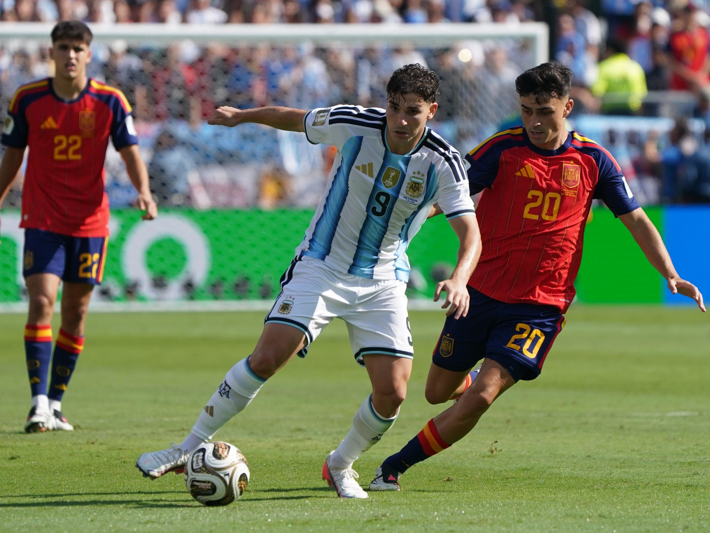

Spain win their second World Cup: La Roja crowned champions after beating Argentina in extra time
 Photo: FIFA World Cup 26
Photo: FIFA World Cup 26
Luis de la Fuente's side beat Argentina 1-0 in extra time on Sunday, with a goal from Ferran Torres in the 105th minute, to be crowned champions of the 2026 FIFA World Cup at MetLife Stadium in New Jersey. It is La Roja's second world title, sixteen years after South Africa 2010, in a historic final between two Spanish-speaking nations.
Match facts
Competition: 2026 FIFA World Cup Final.
Result: Spain 1-0 Argentina (after extra time).
Date: Sunday 19 July 2026.
Stadium: MetLife Stadium (New York New Jersey Stadium during the tournament), East Rutherford, New Jersey.
Attendance: around 80,000, in a venue with capacity for 82,500.
Referee: Slavko Vinčić (Slovenia).
Goal: Ferran Torres, 105' (Spain), assisted by Nico Williams after a cross from Pedro Porro.
Disallowed goals: Nico Williams (97', for a prior foul awarded against Mikel Merino) and Ferran Torres (112', offside).
Yellow cards: Alexis Mac Allister (Argentina, 112').
Red cards: Enzo Fernández (second yellow, 90+3') and Thiago Almada (after the final whistle), both for Argentina.
Line-ups
Spain (Luis de la Fuente): Unai Simón; Pedro Porro, Pau Cubarsí, Aymeric Laporte, Marc Cucurella; Rodri, Fabián Ruiz; Álex Baena, Dani Olmo, Lamine Yamal; Mikel Oyarzabal. Substitutes: Ferran Torres, Nico Williams and Mikel Merino came on in the second half and extra time; Martín Zubimendi replaced Rodri (99') and Eric García came on for Laporte during extra time.
Argentina (Lionel Scaloni): Emiliano "Dibu" Martínez; Gonzalo Montiel, Cristian Romero, Lisandro Martínez, Nicolás Tagliafico; Rodrigo De Paul, Enzo Fernández, Alexis Mac Allister; Nicolás González, Lionel Messi, Julián Álvarez. Substitutes: Marcos Senesi, Giuliano Simeone and Nicolás Otamendi came on during extra time.
A stalemate settled in extra time
The match, refereed by Slovenian official Slavko Vinčić, reached half-time goalless after a tense first half with few clear chances. In that opening period, Lionel Messi suffered a scare after twisting his right ankle attempting a cross from the byline, though he was able to continue.

Photo: FIFA World Cup 26The script barely changed in the second half. Spain imposed their possession game and created chances, but ran into a solid Argentine defensive wall and lacked precision in the final pass. The 90 minutes ended goalless and, in stoppage time, Enzo Fernández was sent off, leaving the Albiceleste with ten men for extra time.
Extra time confirmed Spain's total dominance, as they finished the match with 20 shots on target to Argentina's none.
Nico Williams' disallowed goal and the refereeing controversy
The first major controversy of the additional period came in the 97th minute. Nico Williams pounced on a loose ball inside the box and beat Emiliano Martínez, but Vinčić disallowed the goal for a supposed prior foul by Mikel Merino on Otamendi — a stray touch which, according to many analysts, neither prevented the defender from playing the ball nor showed clear intent. VAR did not call the referee to review the incident, which only heightened the outrage on the Spanish bench.
Far from being discouraged, Spain kept pressing and were rewarded soon after: in the 105th minute, Ferran Torres fired home a cross from Pedro Porro in a move started by Nico Williams himself, who made up for his disallowed goal by providing the assist for the strike that won a World Cup. Later, in the second period of extra time, in the 112th minute, Ferran Torres had a second goal ruled out for offside, though the scoreline stayed at 1-0.
In the closing minutes, with Spain holding off Argentina's desperate pushes, Messi himself supplied a ball that Marcos Senesi shot narrowly wide, and Giuliano Simeone spurned a clear chance over the crossbar. When the referee blew the final whistle in the 120+5th minute, Spain were, mathematically, world champions.
A physical battle and a scuffle that overshadowed the celebrations
Beyond the result, the match left behind a residue of tension that Argentina failed to handle well. On the pitch, the Albiceleste racked up fouls and rough challenges for much of the game, with Enzo Fernández picking up a second yellow card in stoppage time and Thiago Almada, who had come on in the second half, involved in several strong tackles.
 Photo: FIFA World Cup 26
Photo: FIFA World Cup 26
The most regrettable moment came after the final whistle. In the midst of Spain's outburst of joy, Rodri crossed paths with Nahuel Molina, who made a gesture towards the Manchester City midfielder and sparked a scuffle between players from both teams. Tensions rose further when Leandro Paredes grabbed Eric García by the neck amid the melee, while Gavi, who had come to the defence of his Barcelona teammate, ended up on the ground surrounded by Argentine players. Lionel Scaloni himself had to step in to calm things down, and Thiago Almada was sent off for his part in the brawl.
Argentina's lack of sportsmanship was not confined to the pitch. As Spain began the medal and trophy ceremony, a large part of the Argentine delegation turned their backs on the proceedings and headed to one of the stands to greet their fans, without staying on the pitch to witness the champions' coronation — a gesture that caused considerable controversy in the hours after the final.
Rodri lifts the trophy in New Jersey
Captain Rodri Hernández, named the tournament's best player and awarded the Golden Ball, received the trophy from FIFA president Gianni Infantino and United States president Donald Trump in the ceremony held on the MetLife Stadium pitch. Alongside Rodri, Unai Simón was awarded the Golden Glove as the tournament's best goalkeeper, Pau Cubarsí won the Best Young Player award, and France's Kylian Mbappé took home the Golden Boot as the World Cup's top scorer.
For Argentina, the final marked the end of Lionel Messi's World Cup career with the Albiceleste, a farewell defined by defeat to their eternal continental rivals.
"They are an example for Spain"
A visibly emotional Luis de la Fuente reflected on the title moments after the final whistle: "I feel enormous pride in this generation of players, who have grown with this idea of group, of team, of family. For me it's an absolute honour." With tears in his eyes, the coach from La Rioja added: "They are an example for Spain: together we are stronger."
Goalscorer Ferran Torres did not hide his emotion: "This goal belongs to 47 million people and to the 26 players. It was written in the stars that we'd win away from home, and we wanted them to be proud." The forward, heavily criticised in the months leading up to the tournament, added: "This is a huge release; I've been very criticised, but God always gives me the strength I need."
Back in Spain, the Royal Household congratulated the team in a statement: "World champions! This star is the reward for a journey as long as it was demanding, covered with effort, sacrifice, perseverance and exemplary commitment in every match." The Spanish Olympic Committee also joined the congratulations, noting that Spain "is once again at the top of the world 16 years on."
The party moves to Madrid
The world champions will land in Madrid this Monday from the United States. In the afternoon, the players will visit King Felipe VI and Prime Minister Pedro Sánchez before kicking off the traditional victory parade. The route, aboard an open-top bus, will set off at around 20:00 from Moncloa, continue along Calle Princesa and Calle Alberto Aguilera, pass through Plaza de Colón and finish, as tradition dictates, at Plaza de Cibeles, where thousands of fans are already waiting to welcome the new world champions.